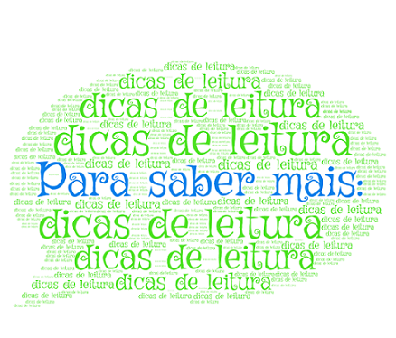
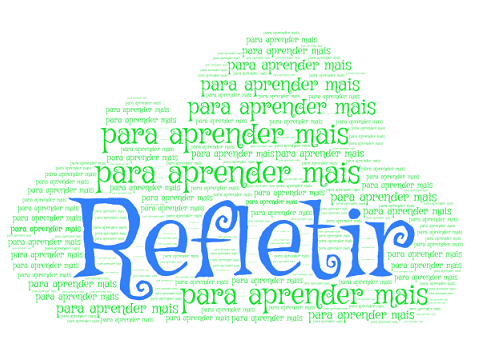

Este Objeto Virtual de Aprendizagem é resultado da tese de doutorado “Construção e validação de objeto virtual de aprendizagem para apoio ao ensino da Sistematização da Assistência de Enfermagem aos técnicos de enfermagem”, de autoria de Pétala Tuani Candido de Oliveira Salvador, sob a orientação dos professores Viviane Euzébia Pereira Santos, José Carlos Amado Martins e Maria Isabel Domingues Fernandes.
Foi desenvolvido no âmbito do Programa de Pós-Graduação em Enfermagem da Universidade Federal do Rio Grande do Norte (UFRN) e aperfeiçoado em estágio de doutoramento sanduíche na Escola Superior de Enfermagem de Coimbra (ESENFC), com financiamento do Conselho Nacional de Desenvolvimento Científico e Tecnológico (CNPq).
O seu uso é incentivado no âmbito do ensino semipresencial, ou seja, como apoio ao ensino presencial da SAE.
O Objeto Virtual foi desenvolvido em sua essência para estudantes do curso técnico de enfermagem. Todavia, o aprendizado é sugerido e incentivado a discentes e profissionais de enfermagem, de qualquer nível acadêmico.
O Objeto Virtual está organizado em quatro telas de conteúdo:

